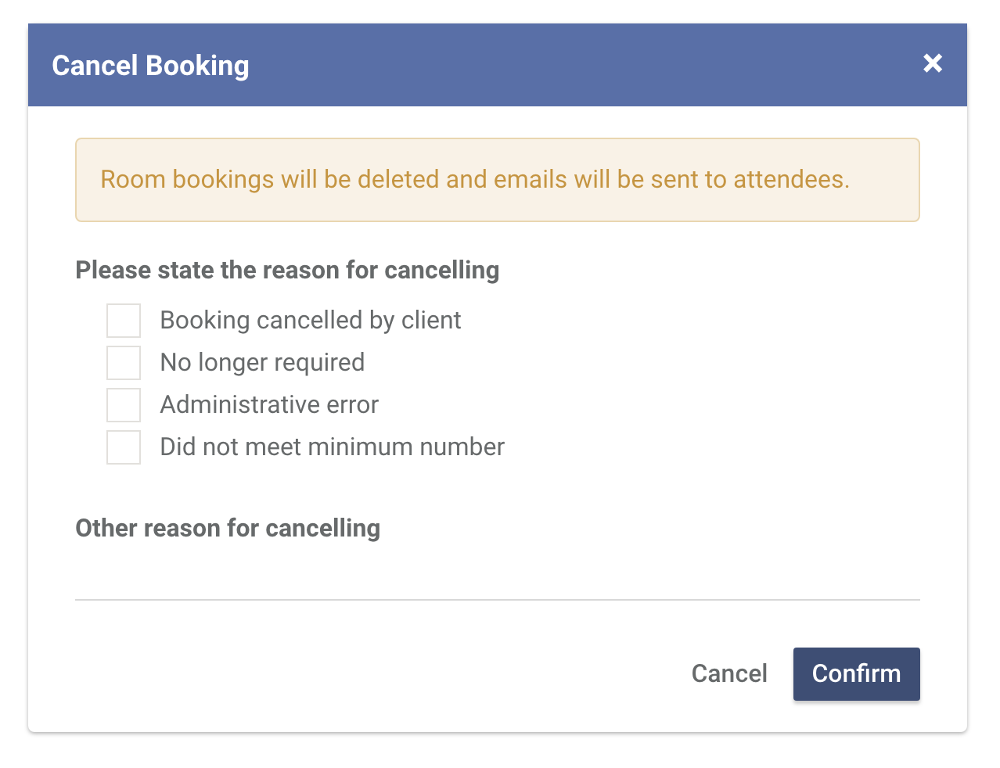

Canceling a booking
-
To cancel a booking
Head over to the booking that you want to cancel. Click Actions and then click Cancel

-
To confirm your action, you need to specify a reason. Canceling a booking removes all room bookings and if it's a course booking, it will also send an email to all of the attendees.
